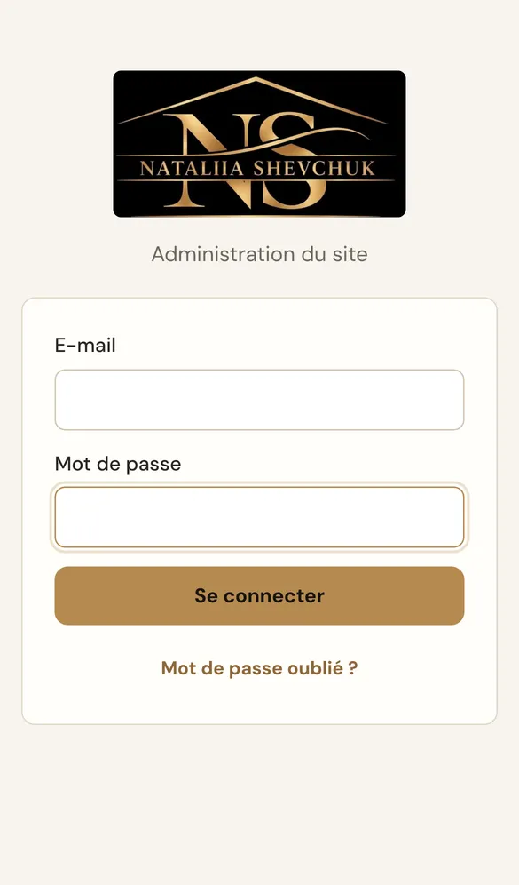
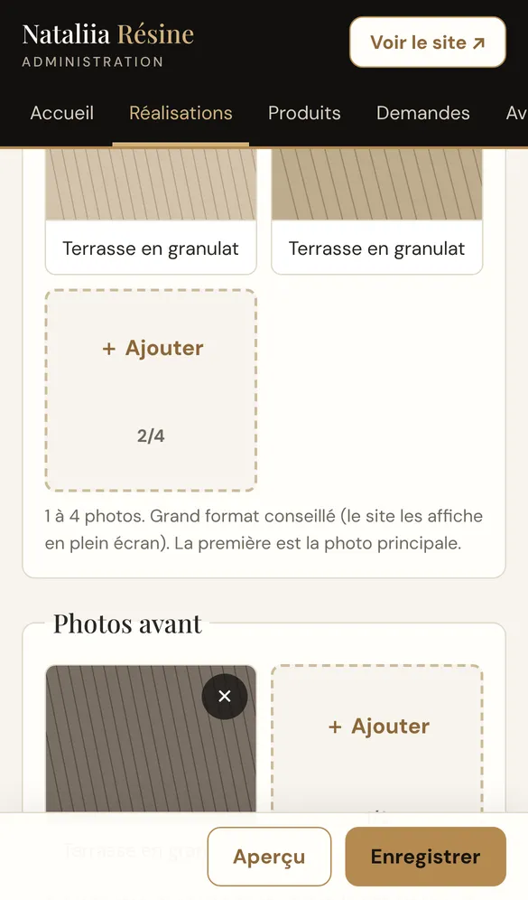
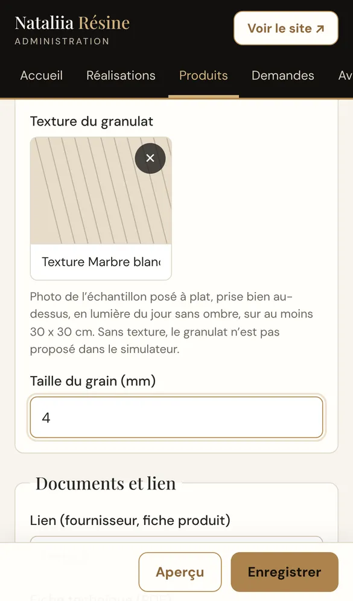
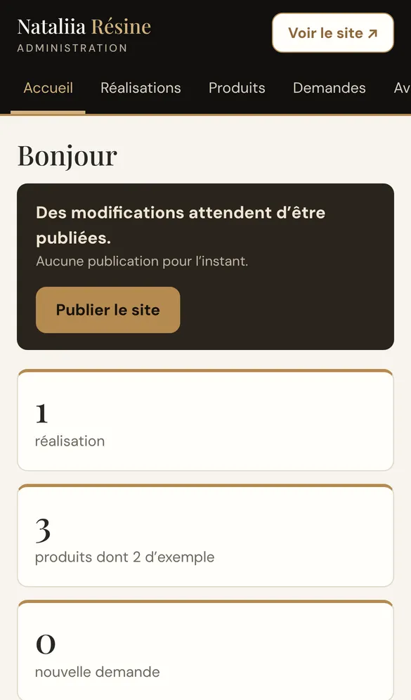
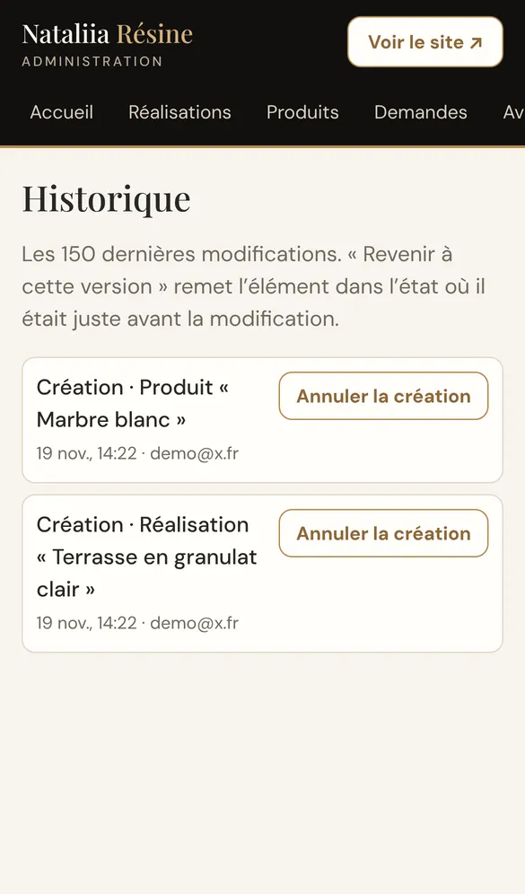

Mettre votre site à jour
Ce guide explique comment ajouter vos chantiers, vos produits et vos avis clients, puis les mettre en ligne. Tout se fait depuis votre téléphone ou votre ordinateur, à l’adresse de votre site suivie de /admin.
- Se connecter
- Ajouter une réalisation
- Ajouter un produit
- Publier le site
- Suivre les demandes
- Corriger une erreur
- Avis, prestations, réglages
- Réussir ses photos
1. Se connecter
- Ouvrez l’adresse de l’administration. Ajoutez-la à l’écran d’accueil de votre téléphone pour la retrouver en un geste.
- Saisissez votre e-mail et votre mot de passe, puis « Se connecter ».
- Mot de passe oublié : saisissez votre e-mail, touchez « Mot de passe oublié ? », puis suivez le lien reçu par e-mail.
Vous restez connectée sur votre appareil. Sur un ordinateur partagé, pensez à vous déconnecter (rubrique « Mon compte »).

2. Ajouter une réalisation
- Rubrique Réalisations, puis « Nouvelle réalisation ».
- Donnez un titre (par exemple « Terrasse en granulat clair »), choisissez le type de prestation et, si vous le souhaitez, la ville et la date.
- Photos après : 1 à 4 photos. Touchez « Ajouter », puis prenez la photo ou choisissez-la dans votre galerie. La première photo est la photo principale. Les flèches ← → changent l’ordre.
- Photos avant : 0 à 2 photos. Avec une photo avant, le site affiche un curseur pour comparer avant et après.
- Cochez les produits utilisés.
- « Aperçu » montre la page telle qu’elle apparaîtra. « Enregistrer » sauvegarde.
Les photos sont réduites automatiquement avant l’envoi : vous pouvez envoyer les photos de votre téléphone telles quelles. Sous chaque photo, une courte description est proposée ; vous pouvez la modifier.
Pour préparer une réalisation sans la montrer tout de suite, décochez « Visible sur le site » : elle reste en brouillon.

3. Ajouter un produit
- Rubrique Produits, puis « Nouveau produit ».
- Nom et catégorie (granulats, profils de finition, autres). Le reste est facultatif : descriptif, photos, lien vers le fournisseur, fiche technique en PDF.
- Pour un granulat : ajoutez sa texture et la taille du grain. C’est ce qui permet aux visiteurs de l’essayer sur la photo de leur terrasse. Sans texture, le granulat n’est pas proposé dans le simulateur.
Les deux produits marqués « Exemple » sont là pour la démonstration. Supprimez-les quand vos vrais granulats sont saisis (bouton « Supprimer » en bas de leur fiche).

4. Publier le site
Vos modifications sont enregistrées tout de suite, mais elles n’apparaissent sur le site qu’après publication. Cela vous laisse le temps de tout préparer.
- Rubrique Accueil de l’administration : un encadré indique « Des modifications attendent d’être publiées ».
- Touchez « Publier le site ». Le site est à jour en 1 à 3 minutes. Vous pouvez continuer à travailler pendant ce temps.

5. Suivre les demandes
Quand un visiteur envoie son projet depuis le site, vous recevez un e-mail et la demande apparaît dans la rubrique Demandes, avec ses coordonnées, ses photos et les rendus du simulateur.
- Changez le statut au fil du suivi : nouveau, contacté, devis envoyé, signé, sans suite. Ajoutez vos notes.
- Un client vous demande ses données ou leur suppression : « Exporter » ou « Supprimer le dossier ».
- Les dossiers sans suite sont effacés automatiquement 3 ans après le dernier contact.
6. Corriger une erreur
La rubrique Historique liste toutes les modifications, avec la date et l’auteur. « Revenir à cette version » remet un élément dans l’état où il était avant la modification, y compris un élément supprimé par erreur. Publiez ensuite le site.

7. Avis, prestations, réglages
- Avis : recopiez les avis de vos clients, avec leur accord. La page « Avis clients » apparaît sur le site dès le premier avis publié.
- Prestations : modifiez les textes, ajoutez une photo, changez l’ordre avec ▲ ▼.
- Réglages : téléphone, e-mail, WhatsApp, villes desservies, phrase d’accroche, image d’accueil et logo.
- Partout, ▲ ▼ changent l’ordre d’affichage sur le site.
8. Réussir ses photos
- Téléphone à l’horizontale pour les réalisations : le site les affiche en grand format.
- Photo avant et photo après prises du même endroit, avec le même cadrage : le curseur avant/après n’en est que plus parlant.
- Lumière du jour, sans contre-jour. Évitez les ombres portées sur le revêtement.
- Texture d’un granulat : échantillon posé à plat (au moins 30 x 30 cm), photo prise bien au-dessus, en lumière du jour sans ombre.
- Ne montrez pas de plaque d’immatriculation, de numéro de rue ni de personne sans son accord.
Une question, un problème ? Contactez Apexus.